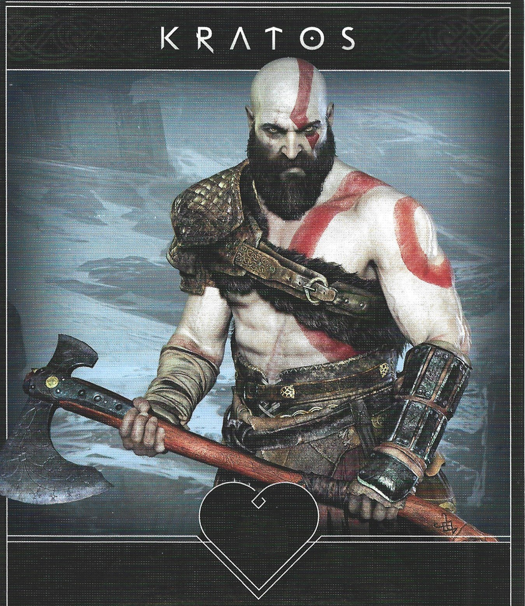
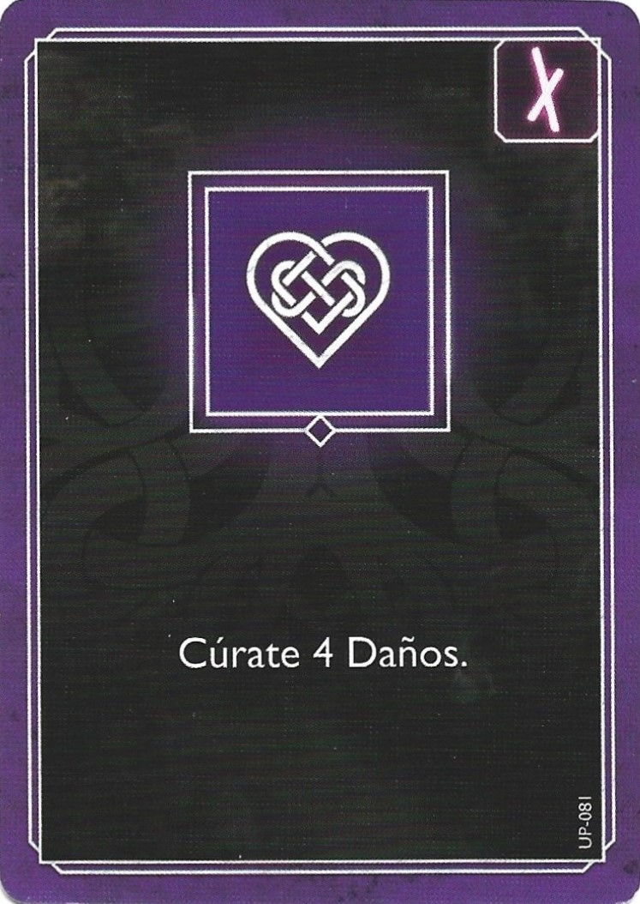
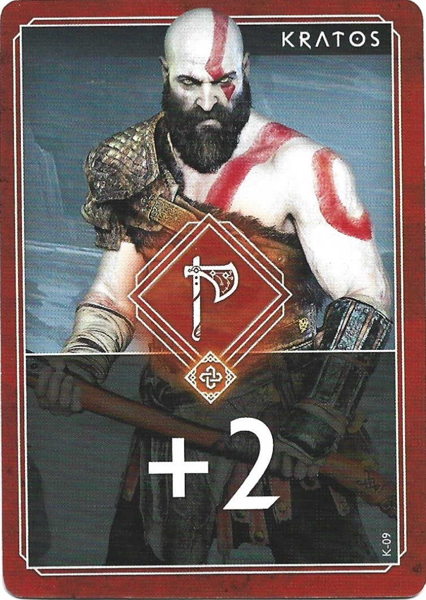
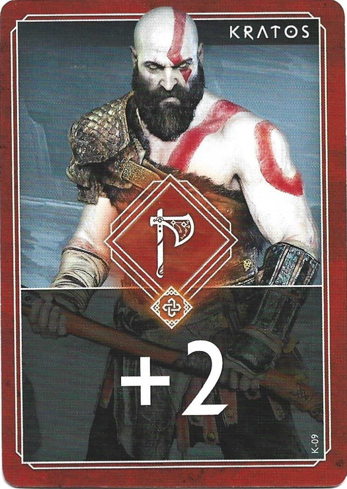
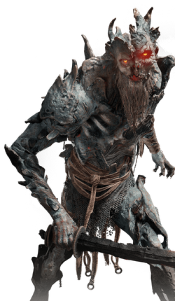
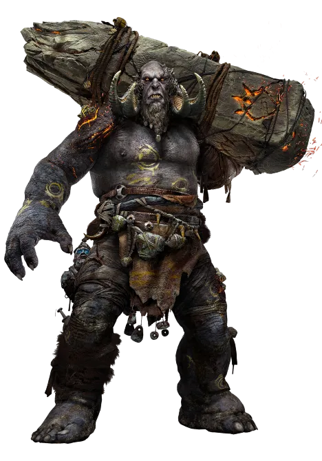
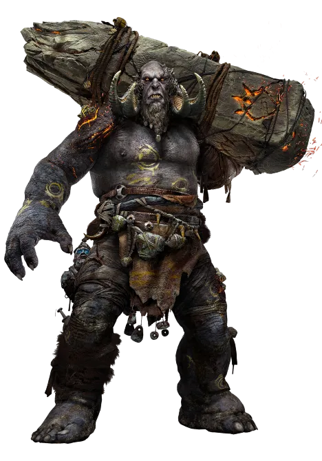

Personajes

Cada personaje tiene:
- Puntos de vida: Indican cuanta salud te queda. Si llega a 0 pierdes la partida.
- Puntos de escudo: Protegen tu salud. Si recibes daño se resta primero del escudo y despues de tu salud
- Mazo personalizado: Cartas iniciales con las que empiezas la partida. Estas tienen una ilustración de tu personaje. Este mazo se va ampliando a lo largo de la partida.
Al comenzar tu turno robarás cartas que podrás usar. Puedes usarlas en el orden que quieras. El enemigo no te atacará hasta que finalices tu turno.
¡Elige a tu personaje favorito y descubre sus especialidades!
- Puntos de vida: Indican cuanta salud te queda. Si llega a 0 pierdes la partida.
- Puntos de escudo: Protegen tu salud. Si recibes daño se resta primero del escudo y despues de tu salud
- Mazo personalizado: Cartas iniciales con las que empiezas la partida. Estas tienen una ilustración de tu personaje. Este mazo se va ampliando a lo largo de la partida.
Al comenzar tu turno robarás cartas que podrás usar. Puedes usarlas en el orden que quieras. El enemigo no te atacará hasta que finalices tu turno.
¡Elige a tu personaje favorito y descubre sus especialidades!
Cartas

Existen distintos tipos de carta: Daño, Curacion, Escudo. Cada una representada con un dibujo y con numero que indica su valor.
- Las cartas de Daño se usan para atacar a los enemigos e infligirle daño a sus puntos de vida para derrotarles.
- Las cartas de Curacion curan tu vida.
- Las cartas de Escudo crean un escudo que protege tu vida y puede salvarte de morir.
Cuando un personaje ataque, se hará una tirada de dado que decidirá cuanto daño se bloquea. Puede ser desde 0 a 5 puntos de daño.
¡Diseña estrategias para aprovechar al maximo su potencial y vencer a tus enemigos!

- Las cartas de Daño se usan para atacar a los enemigos e infligirle daño a sus puntos de vida para derrotarles.
- Las cartas de Curacion curan tu vida.
- Las cartas de Escudo crean un escudo que protege tu vida y puede salvarte de morir.
Cuando un personaje ataque, se hará una tirada de dado que decidirá cuanto daño se bloquea. Puede ser desde 0 a 5 puntos de daño.
¡Diseña estrategias para aprovechar al maximo su potencial y vencer a tus enemigos!

Enemigos

Durante tu travesía encontraras distintos tipos de enemigos. Te podrás encontrar con enemigos de distinto nivel:
- Nivel bajo: Enemigos normales. No serán un mayor problema.
- Nivel medio: Enemigos que pueden darte un susto si bajas la guardia.
- Nivel superior: Enemigos que te harán centrarte completamente en combate o acabarán contigo.
Los enemigos te atacarán cuando termines tu turno. Su nivel definirá cuantas veces te atacan.
No juzges a un enemigo por su apariencia, ya que puede ser más duro de vencer de lo que imaginas. 
- Nivel bajo: Enemigos normales. No serán un mayor problema.
- Nivel medio: Enemigos que pueden darte un susto si bajas la guardia.
- Nivel superior: Enemigos que te harán centrarte completamente en combate o acabarán contigo.
Los enemigos te atacarán cuando termines tu turno. Su nivel definirá cuantas veces te atacan.
No juzges a un enemigo por su apariencia, ya que puede ser más duro de vencer de lo que imaginas. 
Recompensas
 Recibirás recompensas tras vencer enemigos. Las recompensas pueden darte distintos beneficios:
Recibirás recompensas tras vencer enemigos. Las recompensas pueden darte distintos beneficios:- Cartas extras: Puedes añadir una carta extra a tu mazo para tener distintas posibilidades.
- Aumento de vida: Aumentan tu vida maxima, con lo que podrás sobrevivir con más facilidad.
- Aumento de mano: Aumenta las cartas que robas al comienzo del turno.
Según el nivel del enemigo, las recompensas que recibas serán más beneficiosas.